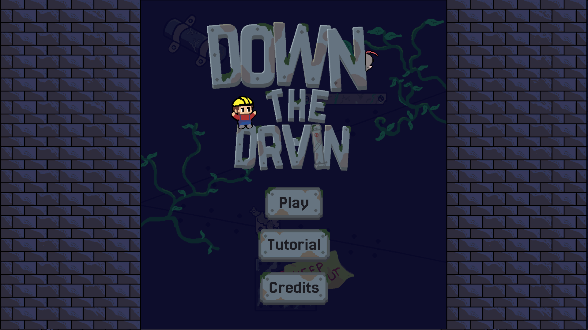
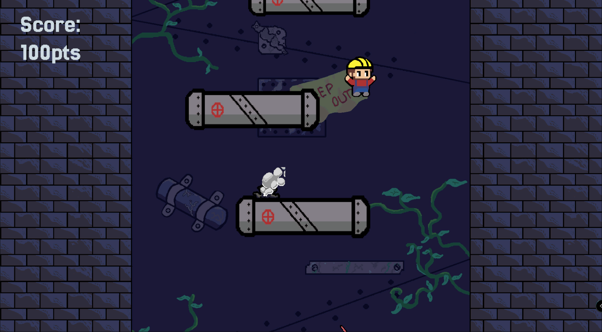
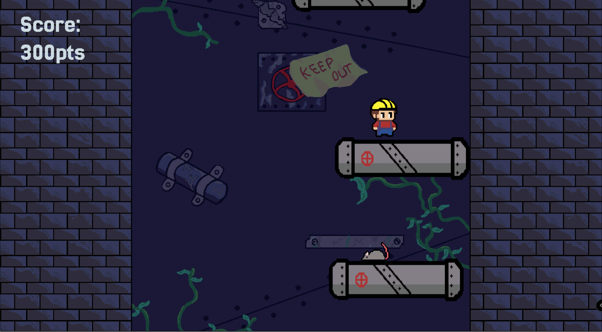
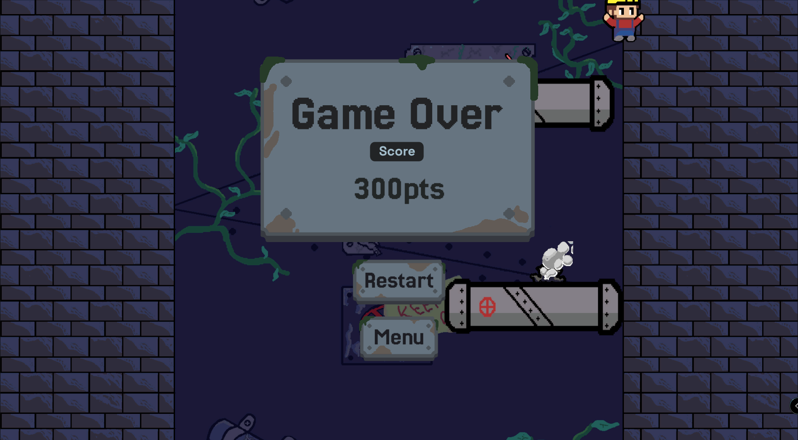
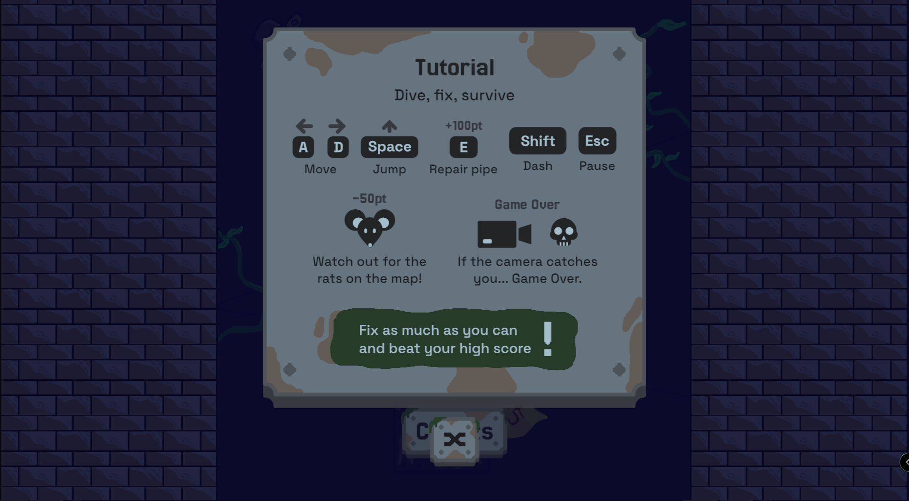

Down The Drain
Un plataformero arcade de descenso infinito: reparas tuberías y esquivas ratas mientras una cámara implacable te empuja cada vez más profundo.
Descripción
Down The Drain es un plataformero arcade 2D de descenso vertical, desarrollado en una game jam de Generation con una duración de solo dos días, bajo el tema "Deeper and Deeper". Se me ocurrió el concepto principal del juego, y lideré el diseño de UI y la documentación, en equipo con Juan Toca y Santiago Romero en programación, Jeffred Castellanos en pixel art, y Mario Mora en audio.
El jugador controla a Mauro, un fontanero atrapado en una alcantarilla que debe reparar tuberías rotas mientras esquiva a Moshi, una rata que resta puntos al contacto. Una cámara de presión desciende a velocidad creciente y obliga a bajar cada vez más rápido: si te alcanza, es Game Over. No hay una condición de victoria tradicional — el objetivo es superar tu propio puntaje, en un loop de rejugabilidad tipo arcade score-attack.
Ya está publicado y disponible para jugar en itch.io.
Proceso de desarrollo
- Idea y GDD inicialBuscábamos una idea simple de implementar en una jam de solo dos días, pero con alta rejugabilidad. Se me ocurrió la premisa del fontanero descendiendo por la alcantarilla, y durante el primer día desarrollé el GDD completo.
- Wireframes y diseño de pantallasEn paralelo, diseñé en Figma los wireframes de las pantallas base del juego (menú, créditos, tutorial, Game Over, pausa), acorde a la estética de pixel art que estábamos manejando, e investigué tipografías para títulos y cuerpo de texto. Junto al equipo definimos la paleta de colores.
- Desarrollo en paraleloMientras tanto, los programadores construyeron la mecánica base de plataformas infinitas, el spawn de enemigos y fallos en tuberías, y la movilidad del jugador; nuestro artista desarrolló los fondos y las tuberías.
- Implementación de la UI en UnityPara el segundo día ya tenía toda la UI implementada en Unity y conectada al juego principal, trabajando en mi propia rama de GitHub (repositorio creado desde el primer día).
- Pitch y GDD finalDiseñé el GDD final acorde con la estética del juego y preparé el pitch usado para presentar el proyecto.
- Pulido y lanzamientoEn el pulido final se integró un shake de cámara al recibir daño y un dash para el jugador. Se hizo el merge a la rama principal, se generaron los builds, y diseñé la página final de itch.io.
Equipo
- Juan Toca — Programación
- Santiago Romero — Programación
- Jeffred Castellanos — Pixel art
- Mario Mora — Audio
- Laura Rojas (yo) — Diseño UI/UX, documentación y game design
Desafíos y aprendizajes
Me enfrenté al reto de integrar shader graphs en los botones para lograr un pequeño brillo metálico, y tuve que resolver problemas para que ese brillo se mantuviera activo de forma consistente en todas las pantallas. A esto se sumó trabajar contra un tiempo sumamente limitado, al ser una jam de solo dos días. Esta experiencia amplió mis conocimientos sobre shader graphs en Unity y sobre cómo priorizar bajo restricciones de tiempo muy ajustadas.
Herramientas
Habilidades demostradas
Galería





Mi trabajo
Wireframes, pantallas de UI y logo que diseñé para este proyecto.